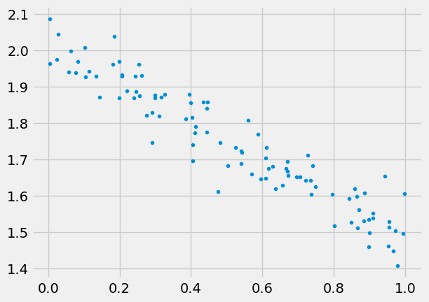
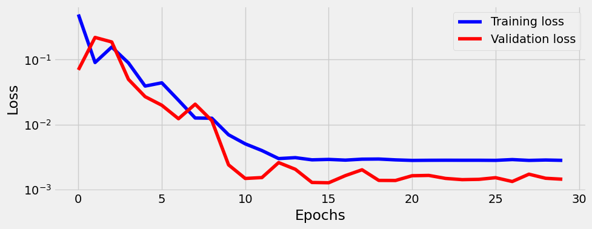
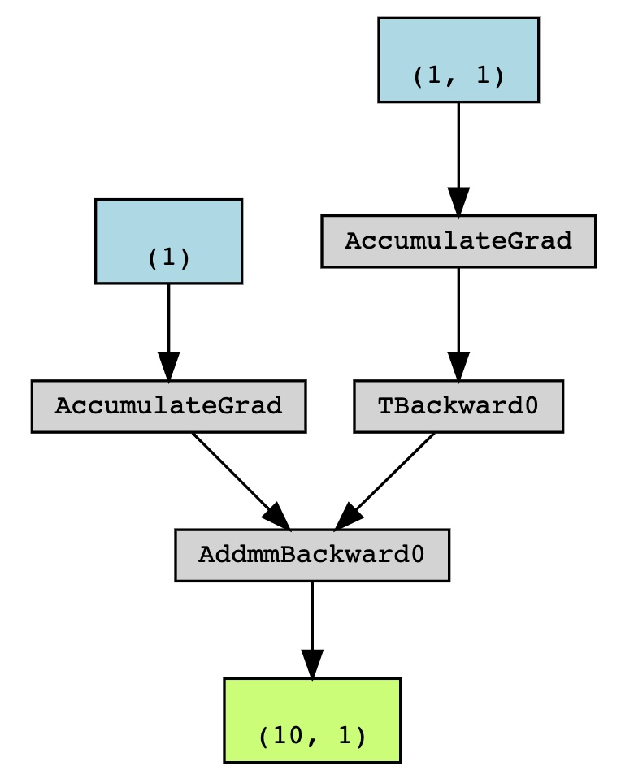

import platform
import numpy as np
import matplotlib.pyplot as plt
import torch
import torch.optim as optim
import torch.nn as nn
from torch.utils.data import TensorDataset, DataLoader
from sklearn.linear_model import LinearRegression
from pytorched.step_by_step import StepByStep
from torchviz import make_dot
plt.style.use('fivethirtyeight')Linear regression
Inspiration by Daniel Voigt Godoy’s books
Generate some data
we’ll use numpy for this, and also need to split the data, can also use numpy for this
np.random.seed(43)
b_true = 2.
w_true = -0.5
N = 100
x = np.random.rand(N,1)
epsilon = 0.05 * np.random.randn(N,1)
y = w_true*x + b_true + epsilon
plt.plot(x,y,'.')
plt.show()
Linear regression with sklearn
Of course we can make a fit using sklearn:
reg = LinearRegression().fit(x, y)
r2_coef = reg.score(x, y)
print(reg.coef_, reg.intercept_, r2_coef)[[-0.52894853]] [2.01635764] 0.9014715901595961but the point is to learn PyTorch and solve much bigger problems.
Create datasets, data loaders
- data set is the object that holds features and labels together,
- split the data into train and valid,
- convert to pytorch tensors,
- create datasets,
- create data_loaders.
np.random.seed(43)
indices = np.arange(N)
np.random.shuffle(indices)
train_indices = indices[:int(0.8*N)]
val_indices = indices[int(0.8*N):]
device = 'cuda' if torch.cuda.is_available() else 'cpu'
train_x = torch.tensor(x[train_indices], dtype=torch.float32, device=device)
train_y = torch.tensor(y[train_indices], dtype=torch.float32, device=device)
val_x = torch.tensor(x[val_indices], dtype=torch.float32, device=device)
val_y = torch.tensor(y[val_indices], dtype=torch.float32, device=device)
train_dataset = TensorDataset(train_x, train_y)
val_dataset = TensorDataset(val_x, val_y)
train_loader = DataLoader(train_dataset, batch_size=16, shuffle=True)
val_loader = DataLoader(val_dataset, batch_size=16)Model, loss, and optimizer
torch.random.manual_seed(42)
model = torch.nn.Linear(1,1, bias=True, device=device)
optimizer = optim.SGD(model.parameters(), lr=0.1)
loss_fn = nn.MSELoss()Train
model.reset_parameters()
sbs = StepByStep(model, optimizer, loss_fn)
sbs.set_loaders(train_loader, val_loader)
sbs.train(30)sbs.model.state_dict()OrderedDict([('weight', tensor([[-0.5267]])), ('bias', tensor([2.0177]))])sbs.plot_losses()
Note btw that alex and sbs.model are the same object:
assert id(sbs.model) == id(model)Predict
test = np.random.rand(100,1)
test_predictions = sbs.predict(test)
plt.plot(x,y,'.')
plt.plot(test,test_predictions,'.')
plt.show()
Save/load model
sbs.save_checkpoint('pera.pth')sbs.load_checkpoint('pera.pth')Visualize model
One can use make_dot(yhat) locally. I can’t make graphviz work on GitHub, but the output looks like this:

Set up tensorboard
One can add tensorboard to monitor losses, this will be important when having long training. We can start tensorboard from terminal using tensorboard --logdir runs (or from notebook if using extension via %load_ext tensorboard). The tensorboard should be running at http://localhost:6006/ (ignore "TensorFlow installation not found" message, we don’t need it). Make sure path is right, tensorboard will be empty if it can’t find the runs folder.